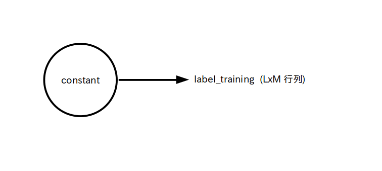

予測確率 predict にlog を通し、ラベル label と掛け合わる、さらに総和演算をして -1 倍して entropy に出力する

前ページで 3 層ニューラルネットワークを作りましたが、隠れ層と出力層の重みやバイアス w_h、b_h、w_o、b_o は乱数で初期化していますので、このままでは入力信号 data を入力しても全く意味の無い出力信号 y_o が出力されます。
したがって何らかの入力信号を与えた時に理想的な出力がされるようにニューラルネットワークを学習させる(＝重みやバイアスを適切な値を変化させる)必要があります
ここでは「機械学習(マシンラーニング)」の一種である「ディープラーニング」を使ってニューラルネットワークを学習させてみましょう。
改めて書くと、ディープラーニングの定義は
「教師信号が与えられた時に理想的な信号が出力されるようにニューラルネットワークの重みやバイアスなどのパラメータ値を決める機械学習手法」
です。
ここで「教師信号」とは文字通りニューラルネットワークを教育するための教師役信号のことです。
また、ある教師信号を与えたときの理想的な出力信号のことを「ラベル」と呼びます。
※ 教師信号が無い機械学習(教師なし学習と言います)もありますが今回は取り扱いません。
このディープラーニングを実行すると、教師信号をニューラルネットワークに入れて出てきた出力信号とラベルの値が近くなるように重みとバイアスの値が更新されます。
ただし人間と同様に一回で学習するのは無理なので何回も学習を繰り返す必要があります。
教師信号は前ページで考えた入力信号 data のように行列で表されます。
ただし学習を行うためには教師信号とラベルの組(データセット)を複数用意する必要があります。
そこで教師信号全体の名前を teacher とし、データセットが No.1 から No.L まで L 組あることにすると、今考えている 3 層ニューラルネットワークの入力層のパーセプトロンの個数は N 個でしたので、 teacher は LxN 行列
\[ {\rm teacher} = \begin{bmatrix} t_{11} & \cdots & t_{1N} \\ \vdots & \ddots & \vdots \\ t_{L1} & \cdots & t_{LN} \\ \end{bmatrix} \]
となります。
teacher の j 行目がデータセット No.j に相当します。
よって TensorFlow では教師信号は図 1 の様に L x N 行列の定数テンソルで定義されます。
teacher : 教師信号、 L x N 行列 (定数テンソル)、j 行目がデータセット No.j に相当
次はラベルについて考えます。
今考えている 3 層ニューラルネットワークの出力層のパーセプトロンの個数は M 個で、データセットの組は No.1 から No.L までの L 個としましたので、 ラベル全体の名前を label とすると、label は LxM 行列
\[ {\rm label} = \begin{bmatrix} l_{11} & \cdots & l_{1M} \\ \vdots & \ddots & \vdots \\ l_{L1} & \cdots & l_{LM} \\ \end{bmatrix} \]で表すことができます。
さて、このラベルの値をどのようにセットするかは取り扱う問題によって決まるのですが、今回は「多クラス分類問題」について考えてみたいと思います。
例えばニューラルネットワークに入力された画像を「猫」と「犬」と「鳥」の 3 クラス(M = 3)に分類したい場合を考えてみましょう。
この場合、データセット No.i における教師信号が猫(クラス No.1)の画像だったら $l_{i1} = 1$ 、犬の画像(クラス No.2)だったら $l_{i2} = 1$ 、鳥の画像(クラス No.3)だったら $l_{i3} = 1$ 、それ以外は 0 の値を label にセットします。
つまり
猫ラベル(クラス No.1)・・・ $\{1,0,0\}$
犬ラベル(クラス No.2)・・・ $\{0,1,0\}$
鳥ラベル(クラス No.3)・・・ $\{0,0,1\}$
とします。
この様にあるクラスに属する場合は 1、それ以外は 0 とする様にきめたラベルのことをone-hotベクトル形式と呼びます。
よって TensorFlow ではラベルは図 2 の様に L x M 行列の定数テンソルで定義されます。
label : ラベル、 L x M 行列 (定数テンソル)、j 行目がデータセット No.j に相当

上で挙げた多クラス分類問題を扱う時、ニューラルネットワークの出力はどういう意味を持つのでしょうか？
それを考えるため、まず教師信号 teachar をニューラルネットワークに入れて出てきた出力信号を LxM 行列
とします。
ここで今回は出力層のパーセプトロンの活性化関数をsoftmax 関数としたため
\[ 0 \leq p_{ij} \leq 1 \ ,\ \sum_{j=1}^M p_{ij} = 1 \]
という関係が成り立っています。
つまり、多クラス分類問題を考える場合、
「ニューラルネットワークの出力 $p_{ij}$ はデータセット No.i の教師信号がクラス No.j に属する予想確率」
を表します。
教師信号とラベルのデータセットを用意したら、次は教師信号をニューラルネットワークに入れて出てきた出力信号とラベルの値が「そっくり」になるように重みとバイアスをディープラーニングを使って更新します。
ただし何らかの指標が無いと「そっくり度」がわかりませんので、まずその指標を決めなければいけません。
この指標の事を「損失関数(loss function)」と呼びます。
この損失関数は色々ありますが今回は多クラス分類問題でよく使われている「カテゴリカル・クロスエントロピー(categorical cross entropy)」を利用したいと思います。
カテゴリカル・クロスエントロピーは上で定義したラベル label と予想確率 predict それぞれの要素 $l_{ij}$ と $p_{ij}$ を使って次の様に定義されます。
\[ {\rm entropy} = -\sum_{i=1}^L \sum_{j=1}^M l_{ij}\log p_{ij} \]
さて、このカテゴリカル・クロスエントロピーの値 entropy は
というとても良い性質を持っていますので、entropy が可能な限り小さくなる様に重みとバイアスの値を更新すれば良い事が分かります。
ところでカテゴリカル・クロスエントロピーは総和演算 を使って次のような行列演算で求める事が出来ます。
entropy = - reduce_sum( log(predict)*label )
よってカテゴリカル・クロスエントロピーの演算部をデータフロー・グラフ化すると次のようになります。
予測確率 predict にlog を通し、ラベル label と掛け合わる、さらに総和演算をして -1 倍して entropy に出力する
predict を求めている部分も含めると、全体では次のようなデータフロー・グラフとなります。

では全ての準備が整ったのでいよいよディープラーニングを実行して重みとバイアスを更新します。
ディープラーニングの方式には色々あるのですが今回は「SGD(Stochastic Gradient Descent: 確率的勾配降下法)」を用います。
SGD を実行するためは非常に難しい数学の知識が必要なのですが、幸いなことに TensorFlow ではクラスとして既に用意されているので誰でも簡単に利用できます。
tf.keras.optimizers.SGD( learning_rate=学習率 )
メソッド:
minimize( lambda: 損失関数, [学習対象の変数のリスト] )・・・学習を1回実施する、戻り値は実施済み学習回数
ここで学習率は学習の精度と速度を表しています。
学習率の値が大きいほどニューラルネットワークは適当に学習しますが速く学習が進みます。
逆に値が小さいとニューラルネットワークはきちんと学習しますが遅く学習が進みます。
ただ学習率をいくらにしようとも 1 回では学習は終わりませんので、損失関数の値が十分小さくなるまで何回も minimize メソッドによる学習を繰り返す必要があります。
この反復回数の事を「エポック数(epoch)」と呼びます。
※ エポック数の他に「バッチサイズ」という重要な学習パラメータがありますが、今回は説明を省略します
例えば以下のソース 1 はSGD を用いた学習例です。
この例では学習対象である変数 x と y の初期値をそれぞれ 1 と-0.5 、学習率を 0.2、エポック数を 5、損失関数を ${\rm loss}() = x^2+y^2$ としたとき、loss() が最小になる x と y の値(つまり (x,y)=(0,0)) を SGD を使って求めています。
import tensorflow as tf
# 学習対象の変数
x = tf.Variable([[1]], dtype=tf.float32)
y = tf.Variable([[-0.5]], dtype=tf.float32)
#学習率
r = 0.2
#エポック数
epoch = 5
#損失関数
@tf.function
def loss():
return x**2 + y**2
print('損失='+str(loss().numpy()))
print('x='+str(x.numpy()))
print('y='+str(y.numpy()))
print('')
opt = tf.keras.optimizers.SGD( learning_rate=r ) # SGD クラスのインスタンス
for i in range(epoch):
opt.minimize(lambda: loss(), [x,y])
print('反復回数='+str(step.numpy()))
print('損失='+str(loss().numpy()))
print('x='+str(x.numpy()))
print('y='+str(y.numpy()))
print('')
結果は以下のようになります。
学習が繰り返されるたびに損失関数の値が小さくなり、 (x,y) の値が (0,0) に近づいていることが分かります。
損失=[[1.25]] x=[[1.]] y=[[-0.5]] 反復回数=1 損失=[[0.45000002]] x=[[0.6]] y=[[-0.3]] 反復回数=2 損失=[[0.162]] x=[[0.36]] y=[[-0.17999999]] 反復回数=3 損失=[[0.05832]] x=[[0.216]] y=[[-0.108]] 反復回数=4 損失=[[0.0209952]] x=[[0.1296]] y=[[-0.06479999]] 反復回数=5 損失=[[0.00755827]] x=[[0.07776]] y=[[-0.03887999]]
それで、今回考えている 3 層ニューラルネットワークの場合は、損失関数としてカテゴリカル・クロスエントロピー、学習対象の変数は重みとバイアス(w_h、b_h、w_o、b_o の4つ) ですので、結局のところ次のように書けばディープラーニングが実行されます。
opt = tf.keras.optimizers.SGD( learning_rate=r ) # SGD クラスのインスタンス
for i in range(epoch):
opt.minimize(lambda: loss(), [w_h,b_h,w_o,b_o])
※1 r : 学習率
※2 epoch : エポック数
※3 loss() : カテゴリカル・クロスエントロピーを計算している損失関数